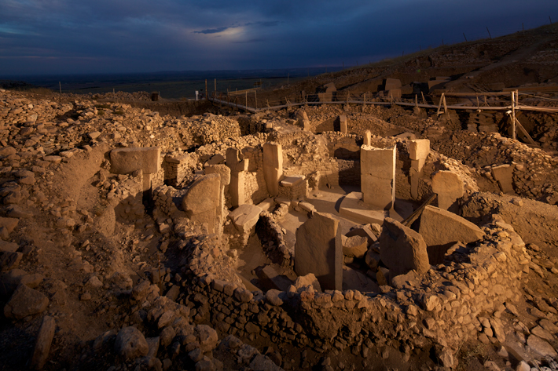
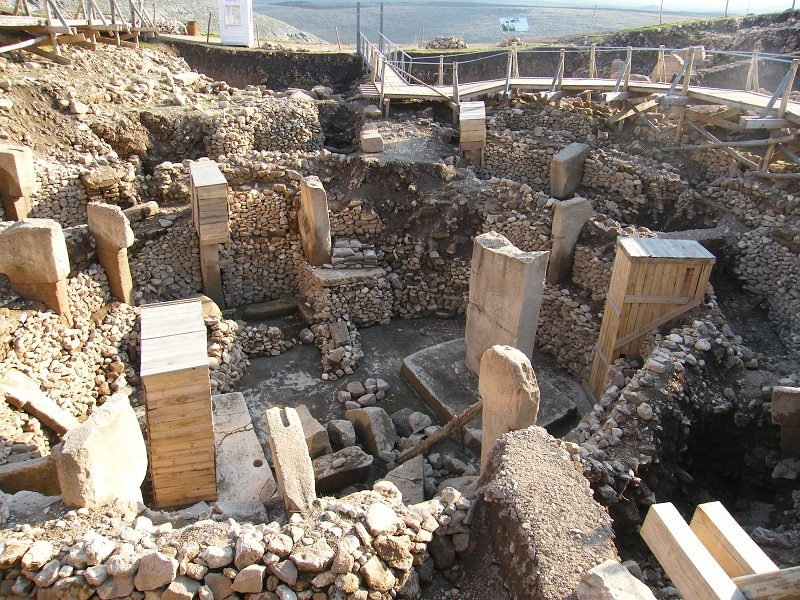
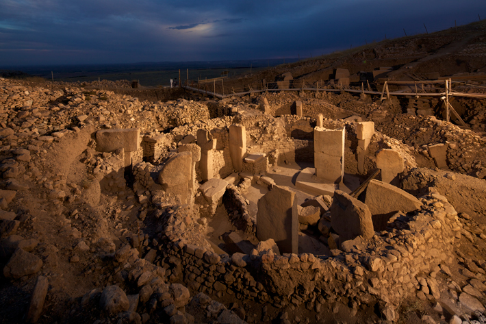
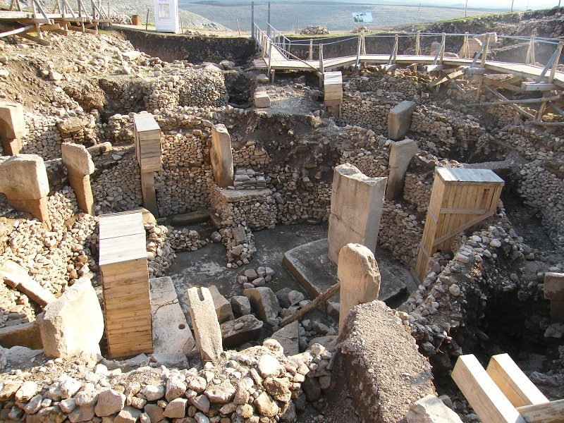

Located in the Germuş mountains of south-eastern Anatolia, this property presents monumental
round-oval
and rectangular megalithic structures erected by hunter-gatherers in the Pre-Pottery Neolithic age
between 9,600 and 8,200 BCE. These monuments were probably used in connection with rituals, most
likely
of a funerary nature. Distinctive T-shaped pillars are carved with images of wild animals, providing
insight into the way of life and beliefs of people living in Upper Mesopotamia about 11,500 years
ago.
Göbekli Tepe is located in Upper Mesopotamia, a region which saw the emergence of the most ancient
farming communities in the world. Monumental structures, interpreted as monumental communal
buildings
(enclosures), were erected by groups of hunter-gatherers in the Pre-Pottery Neolithic period
(10th-9th
millennia BC). The monuments were probably used in connection with social events and rituals and
feature
distinctive limestone T-shaped pillars, some of which are up to 5.50 meters tall. Some of the
pillars,
which are abstract depictions of the human form, also feature low reliefs of items of clothing, e.g.
belts and loincloths, as well as high and low reliefs of wild animals. Recent excavation works have
also
identified the remains of non-monumental structures which appear to stem from domestic buildings.
Criterion (i): The communities that built the monumental megalithic structures of Göbekli Tepe lived
during one of the most momentous transitions in human history, one which took us from
hunter-gatherer
lifeways to the first farming communities. The monumental buildings at Göbekli Tepe demonstrate the
creative human genius of these early (Pre-Pottery Neolithic) societies.
Criterion (ii): Göbekli Tepe is one of the first manifestations of human-made monumental
architecture.
The site testifies to innovative building techniques, including the integration of frequently
decorated
T-shaped limestone pillars, which also fulfilled architectural functions. The imagery found at
Göbekli
Tepe, adorning T-pillars and some small finds (stone vessels, shaft-straighteners, etc.), is also
found
at contemporaneous sites in the Upper Mesopotamian region, thus testifying to a close social network
in
this core region of Neolithisation.
Criterion (iv): Göbekli Tepe is an outstanding example of a monumental ensemble of monumental
megalithic
structures illustrating a significant period of human history. The monolithic T-shaped pillars were
carved from the adjacent limestone plateau and attest to new levels of architectural and engineering
technology. They are believed to bear witness to the presence of specialized craftsmen, and possibly
the
emergence of more hierarchical forms of human society.

 


